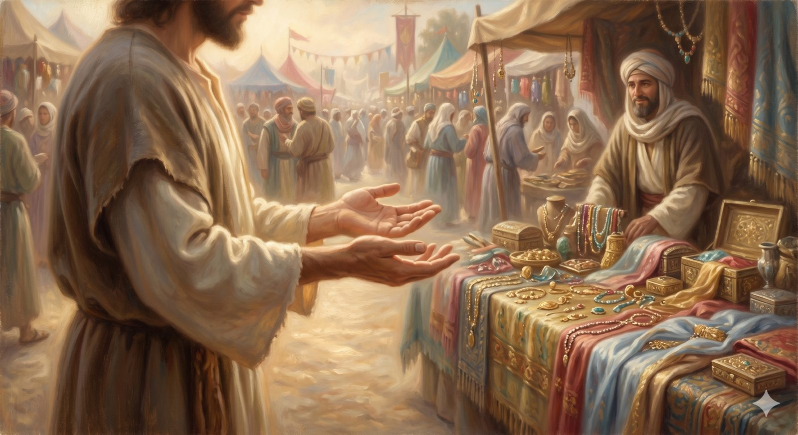

Open Hands
A 30-day devotional on stewardship — the open-handed posture, learned across money, relationships, and forgiveness.
"We buy the truth," they said — and bought nothing else the Fair was selling. in the manner of Bunyan, after Proverbs 23:23
In the middle of Vanity Fair, where every stall cries out for the pilgrim to buy, to keep, to grasp, Christian and Faithful did a strange and provocative thing: they were not interested. Asked what they would buy, they answered that they would buy the truth — and bought nothing else the Fair was selling. This devotional lives in that refusal. It is a thirty-day study in stewardship, and its whole argument can be held in the difference between two gestures: the clenched fist that grasps, and the open hand that holds lightly what it knows it does not finally own.
The landmark above told us why a pilgrim can walk the Fair with open hands — because everything is a trust, and we are managers, not owners. These thirty days are the slow, practical working-out of that posture across the three areas where it is hardest to keep: how we handle money, how we navigate relationships, and how we extend and receive forgiveness. The days are short, the Scripture is central, and the commentary is here only to serve it. Read them one at a time — ideally aloud, and with another person if you can.
How to use these thirty days
Take one day at a time, in order. Each day gives you a short passage of Scripture, a few paragraphs to help it land, and a question to sit with. Begin at Day 1 and follow the path, or pick up wherever you are. The aim is not to finish, but to loosen the grip of a heart that was made to hold the world lightly and its God tightly.
The clenched fist and the open hand are not two topics but one posture — learned in the three classrooms of money, love, and forgiveness.
The thirty days, in order:
Section 1 · The Foundation
Section 2 · Faithful with Money
Work Is Good
Open day 6The Danger of Loving Money
Open day 7The Borrower Is Slave
Open day 8Saving and Planning Ahead
Open day 9Contentment Is a Learned Skill
Open day 10Generosity Is Not Optional
Open day 11Honesty in All Dealings
Open day 12Seek First the Kingdom
Open day 13Section 3 · Faithful with Relationships
The Rare Value of True Friendship
Open day 14What Love Actually Is
Open day 15The Body Is a Temple
Open day 16Flee and Pursue
Open day 17Character Over Chemistry
Open day 18The Unequal Yoke
Open day 19Becoming, Not Just Waiting
Open day 20Get Counsel
Open day 21What Marriage Is Meant to Be
Open day 22Section 4 · Faithful in Forgiveness
Section 5 · The Faithful Life
Begin with the first day, and let it do its work.